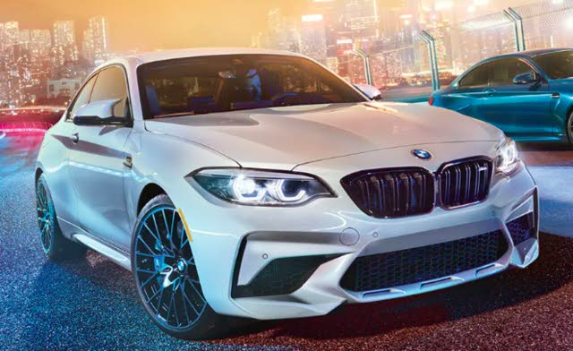

M2 Competition Coupe
CATCH M IF YOU CAN.

Summon a stampede of over four hundred furious horses. The M2 Competition Coupe delivers a spectacular display of performance in a lean body style made to move. Exclusive M parts enhance performance and adding a distinct visual cue. Unmistakably M, the M2 Competition Coupe incites a feeling that can’t be explained – only experienced.
7:54 NÜRBURGRING LAP TIME
4.0 0-60 MPH IN 4.0 SECONDS
405 HORSEPOWER
HIGHLIGHTS
POWER. PLAY.
Grip the wheel and go. The All-New M2 Competition Coupe’s perceptive driving feel and mechanical mastery deliver the driving experience you crave. The M2 Competition Coupe includes an M Sport chassis, compound brakes, and performance-tuned Active M Differential with the footprint of a 2 Series. The result is a thrilling vehicle with a punch well above its weight.
PRIME NUMBERS.
The competition won’t be the only ones blown away. This potent 3.0-liter M TwinPower Turbo inline 6 delivers 405 hp at 5230 rpm with an M specific high-rev character that reaches 7000 rpm. The result is 0-60mph in a tantalizing 4.0 seconds.
FROM A TO A FLASH TO A BLUR.
Over the top. The M2 Competition Coupe’s Twin-turbo single scroll charger combines 2 manifold units with small, high revving compressors to add extra oomph when needed. Resulting in more responsive turbos with virtually no additional weight.
PERFORMANCE TAKES FORM.
Truly a ride to behold. The M2 Competition Coupe’s redesigned front apron with enlarged air intakes and double-spoked M kidney grille improves air flow to meet engine performance demands. New twin-stalk mirrors and sleek Shadowline trim provide an aggressive M look – accentuated by the optional black, 19’’ M light alloy wheels.
ADAPTS TO EVERY DRIVER.
Fine-tuned to you. Customize engine characteristics and align driving configuration with personal driver profiles from the center console and integrated iDrive system. Adjust power dynamics with a quick punch of the M driving mode selector on the steering wheel. With the M2 Competition Coupe, performance is always within reach.
*Disclaimer all the content on this page is taken from BMW USA